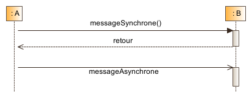
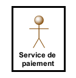
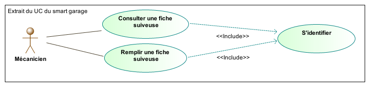

Intro
L’objectif de ce journal de bord est de garder une trace écrite de ce que nous avons appris au cours des différents tds. Aussi, il doit être intéressant pour un autre étudiant de le lire.
Pour que la lecture soit la plus agréable possible, toutes nos explications sont illustrées par des digrammes que nous avons réalisés. Vous trouverez également des définitions directement extraites de l'ouvrage de Pascal Roques, UML 2 par la pratique , car très claires elles permettent de saisir directement certains concepts clés.
Enfin, vous pourrez à la fin de chaque notion, vous tester sur des quiz "faits maison".
Une once de pratique vaut mieux qu'une tonne de théorie.
Swami Sivananda
UML
Qu’est-ce qu’un modèle ? Mais pourquoi modélise-t-on ?
Un modèle est une simplification de la réalité. On construit des modèles parce qu’on ne peut pas se représenter tout un système « dans notre tête » . Ainsi, le modèle nous permet de mieux comprendre le système que nous voulons développer. Sachez cependant une chose : tout modèle est faux dans le sens où il n’est qu’une représentation de la réalité.
All models are wrong, but some are useful.
George Box
Grâce à l’Universal Modelling System, il existe une manière de dessiner, de modéliser un système, standardisée (d’où son nom « Universal »). Tout le monde peut le comprendre : commerciaux, responsables de projets et les développeurs. Mais utiliser un seul type de modèle n’est pas suffisant pour représenter un système complexe. Pour cette raison, il existe différents types de modèles en UML que nous pouvons construire et étudier séparément, mais qui sont toujours en corrélation.
Conclusion
Le mot des concepteurs.
Léon Valabregue
Ce carnet de bord est pour moi une réelle fierté. J'ai investi beaucoup de temps et d'énergie que la passion m'a fait oublier de compter.
Le travail avec Julien s'est plus que bien déroulé, je le remercie particulièrement de m'avoir appris à me servir du gestionnaire de versions git, rendant le travail en collaboration encore plus agréable.
Pour ce qui est de la répartition du travail, je me suis occupé de la rédaction des rubriques et de la modélisation des diagrammes. Cela m'aura permis de revoir toutes les notions abordées au cours de ce module et d'acquérir une certaine maîtrise de l'outil de modélisation modélio.
Julien Satti
Ce carnet/journal aura été pour moi l'occasion de retravailler toutes les notions évoquées en cours et en TD, d'aider Léon à leur rédaction et présentation et de concocter des quiz en rapport avec ces enseignements... toujours avec une touche d'humour bien placée. Faire tout cela m'aura également fait retravailler le HTML/CSS et le JavaScript et m'aura permi de partager mes connaissances sur l'utilisation de Git à Léon.
Pour moi, le plus compliqué à comprendre aura été le diagramme de séquence mais en travaillant avec de nombreux exemples j'ai réussi à comprendre et à bien le maîtriser (il n'y a qu'à voir l'extrait de mon joli diagramme complet !). J'arrive également à l'issus de cet enseignement à bien trouver le sens des relations alors que j'avais du mal au début ; je sais maintenant qu'il faut faire attention au sens des flèches car cela peut avoir un tout autre sens que celui souhaité... une erreur à ne surtout pas commettre ! Une autre chose à retenir absolument et avec laquelle j'ai eu du mal : l'identification de l'unicité ou de la multiplicité d'une association. Ma petite astuce ? Pour chercher la signification correcte, il faut regarder le chiffre sur la classe d'en face.
Enfin, le travail avec L√©on s'est ex√©cut√© d'une excellente mani√®re, les critiques constructives que l'on s'est fait √† chacun aident √† avoir une vision d'ensemble et des points de vue diff√©rents. Nous avons facilement r√©ussi √† collaborer, √† partager le travail et √† trouver des compromis... ce qui fut une exp√©rience fortement agr√©able. ü§ì
Use case
Kesako ? Un diagramme de cas d’utilisation, résumé en une phrase, répond à : « Que souhaite l’utilisateur (client) ? » . Ce diagramme a deux objectifs : d’abord de définir le système du point de vue des utilisateurs (et non des
développeurs) et ensuite de définir les limites précises de ce système.
Séquence
Les diagrammes de séquence en analyse permettent de mieux comprendre l'application à réaliser. Ils restent “superficiels” dans la mesure où ils ne visent pas à mettre en avant l'architecture du système, à l'instar des diagrammes de classes qui décrivent le domaine.
source : mbf-iut.i3s.unice.fr
TD - Séquence
Réalisé avec Modelio
Pour montrer comment les enchaînements se succèdent, on utilise le diagramme de séquence. On représente l’acteur principal à gauche, puis un objet unique représentant le système, et enfin les éventuels acteurs secondaires sollicités durant le scénario à droite du système.
Ligne de vie
Une ligne de vie représente un objet ou acteur participant à une interaction. La syntaxe de son libellé est :
nomLigneDeVie : NomClasseOuActeur
Une ligne de vie est une instance, donc il y a nécessairement les deux points (:) dans son libellé. Si le nom de la ligne de vie (rôle) n'est pas renseigné, on dira que c'est une instance anonyme.
Période d'activité
Réalisé avec Modelio
La réception des messages provoque une période d’activité (rectangle vertical sur la ligne de vie) marquant le traitement du message (spécification d’exécution dans le cas d’un appel de méthode).
source : lipn.univ-paris13.fr
Les messages
Objects are useless unless they can collaborate together.
source : IBM slideplayer
Alors comment interagissent les objets entre eux ? C'est exactement ce que souligne le diagramme de séquence. Les messages sont représentés par des flèches et ordonnés chronologiquement du haut vers le bas.
Synchrone ou asynchrone ?
Réalisé avec Modelio
Un message synchrone bloque l’expéditeur jusqu’à la réponse du destinataire. Si un objet A envoie un message synchrone à un objet B, A reste bloqué tant que B n’a pas terminé. On peut associer aux messages d’appel de méthode un message de retour (en pointillés) marquant la reprise du contrôle par l’objet émetteur du message synchrone.
Un message asynchrone n’est pas bloquant pour l’expéditeur. Le message envoyé peut être pris en compte par le récepteur à tout moment ou ignoré.
source : lipn.univ-paris13.fr
Remarque : Les messages dont B est destinataire se traduiront en ses opérations dans le code.
Les opérateurs de flux de contrôle
UML 2 a apporté d'intéréssants ajouts, en particulier les cadres d'interactions. Nous vous proposons une présentation des opérateurs loop et alt, à partir d'un exemple étudié en td.
...La secrétaire demande à enregistrer un paiement.
Le système lui demande si c'est par CB ou en espèce.
La secrétaire sélectionne par CB.
Le système déclenche le lecteur de carte avec le prix dû.
Le lecteur de carte confirme le paiement au Système.
source : mbf-iut.i3s.unice.fr
Réalisé avec Modelio
Classes
Le diagramme de Classes a toujours été le diagramme le plus important dans toutes les méthodes orientées objet. C'est celui que les outils de génération automatique de code utilisent en priorité. C'est également celui qui contient la plus grande gamme de notations et de variantes, d'où la difficulté d'utiliser correctement tous ces concepts.
UML 2 par la pratique , Pascal Roques, 7e édition.
Du diagramme au code
Les objectifs des derniers tds étaient de faire le lien entre la modélisation des classes et les codes correspondants. C’est une partie intéressante car on voit toute la conception préalablement établie se concrétiser.
Nous vous proposons ci-après deux exemples illustrés et commentés.
TD1 - Introduction
Ce premier TD est une introduction aux diagrammes de cas d’utilisation.
L'acteur
Nous avons appris durant ce TD à identifier un acteur. Pour y parvenir, on peut se poser la question : « Qui ou quoi obtient ou modifie de l’information de ce système ? » On représente un acteur de la forme suivante :
Cet icône est appelé stick man, avec le nom de l’acteur sous le dessin.
Attention ! L’acteur représente un rôle et non une personne. Son nom sera donc écrit au singulier.

On a également appris à reconnaître un acteur externe ou secondaire. Cet acteur peut uniquement consulter ou informer le système (par opposition à l'acteur principal pour qui le cas d’utilisation produit un résultat observable).
Schématiquement, l'acteur externe est encadré.
Les acteurs secondaires n’ont pas eux-mêmes de façon propre d’utiliser le GAB, d’objectif à part entière.
Le cas d'utilisation (Use case)
Réalisé avec Modelio et tiré de UML 2 par la pratique , Pascal Roques, 7e édition.
Ce qu'il faut retenir pour les cas d'utilisation est qu'on les note par un verbe à l'infinitif. Ce verbe illustre un comportement réalisé par le système selon le point de vue d’un de ses acteurs.
Réalisé avec Modelio
Ils sont associés à un ou plusieurs acteurs. Enfin, tous les cas d'utilisation sont regroupés dans un package système.
Généralisation entre acteurs
Réalisé avec Modelio
Une autre façon de représenter ce diagramme de cas d'utilisation est de considérer que l'acteur chef d'atelier est un mécanicien de façon plus générale :
Réalisé avec Modelio
L'intérêt de cette relation est de supprimer les associations entre l'acteur Chef d'atelier et les cas d'utilisations communs avec l'acteur mécanicien.
TD2 - Relations
Nous avons appris au cours de ce TD qu'il existait trois types de relation.
« Extend »
Réalisé avec Modelio
On utilise cette relation pour séparer un comportement optionnel ou rare du comportement obligatoire.
UML 2 par la pratique , Pascal Roques, 7e édition.
Pendant qu'il consulte la fiche suiveuse, le mécanicien peut consulter les travaux antérieurs.
Attention à l'orientation de la flèche ! Extend signifie étendre, c'est l'option qui étend le cas d'utilisation pricipal.
« Include »
Réalisé avec Modelio
On utilise cette relation pour éviter de décrire plusieurs fois le même enchaînement, en factorisant le comportement commun dans un cas d'utilisation à part.
UML 2 par la pratique , Pascal Roques, 7e édition.
Un mécanicien qui voudrait remplir ou consulter une fiche suiveuse doit s'identifier préalablement.
Attention ! Pour orienter correctement la flèche, on se demande quel cas d'utilisation nécessite / a besoin de l'autre.
« Generalisation »
Réalisé avec Modelio
Il s'agit ici d'expliciter différentes manières de réaliser un même cas d’utilisation. Ici, on peut s’identifier soit par reconnaissance faciale, soit par badge ou par login et mot de passe. Dans ces trois cas, le cas d'utilisation
général est de s'identifier.
Attention ! Vous trouverez aussi cette relation sous le nom de spécialisation . C'est en fait la même, ce qui change c'est le sens dans lequel on la lit. La reconnaisance faciale est une forme
spécialisée d'identification.
TD3 - Description
Ce TD visait à ce qu’on apprenne la description des cas d’utilisation, l’avant dernière étape du processus d’écriture des UC. Trois flots nous permettent de décrire chaque étape par des phrases courtes, organisées séquentiellement.
Comment distinguer les flots ?
Nous distinguons les enchaînements alternatifs qui reprennent ensuite à une étape du scénatio nominal des enchaînements d'erreur qui terminent brutalement le cas d'utilisation en échec. L'objecti de l'acteur principal est donc
atteint par les scénarios nominaux et alternatifs mais pas par ceux d'erreur.
UML 2 par la pratique , Pascal Roques, 7e édition.
Préconditions
/*
* Il s’agit ici de décrire l’état dans lequel doit être
* le système avant que l’UC puisse commencer.
* Toujours dans le UC du remplissage de la fiche suiveuse.
* Information optionnelle
* En voici un exemple:
*/La secrétaire a enregistré le client à un rendez-vous (rdv).
La secrétaire a créée une fiche suiveuse associée au client.
Le SI est connecté au boîtier spécialisé. Flot nominal
/*
* Il s’agit ici de structurer les flots de base
* en étapes majeures.
* ATTENTION ! Veiller à utiliser la voix active
* Par exemple pour l’étape 2
* Ne pas dire “Quand le SI a identifié le mécanicien”
* On peut et cela aide à la compréhension,
* mettre un “=>” pour donner un exemple visant
* à illustrer.
*/Le mécanicien demande à être identifié => il présente son badge
Le SI identifie le mécanicien. => Jean Reparebien
Le mécanicien demande à identifier le véhicule dans le système. => Jean présente la puce
Le SI identifie le véhicule. => peugeot 308 immatriculé 124PG06
Le système enregistre l’heure de début de réparation => 10h04
Le mécanicien confirme
Le SI propose des types de réparation. => durites, niveaux, vidange
Le mécanicien en choisit un
Le SI valide
Le SI propose la déconnexion
Le mécanicien se déconnecte
Flot alternatif
/*
* Il s’agit ici d’identifier des flots différents du flot principal
* Mais qui ne sont pas des erreurs
*/
A1 : Le mécanicien a fini sa réparation.
Le SI enregistre l’heure de fin de réparation. => 12h15
Le mécanicien valide. Le scénario nominal reprend au point 9.
A2 : Le mécanicien souhaite consulter les travaux antérieurs.
Le mécanicien refuse.
Le mécanicien demande d‘afficher les travaux antérieurs.
Le SI affiche les travaux antérieurs.
Le mécanicien quitte l’affichage des travaux antérieurs.
Le scénario nominal reprend au point 10.
Flot d'erreur
/*
* Il faut ici identifier les cas éventuels d’erreur du SI
* Ceux qui ne permettent pas à l’acteur
* De réaliser le cas d’utilisation.
*/
2a. Le SI n’identifie pas le mécanicien.
4a. Le SI n’identifie pas le véhicule.
Postconditions
/*
* Il s’agit ici de décrire l’état dans lequel doit être le système à la fin du UC
* Il faut l’utiliser lorsque l’état du système est une condition préalable à un autre UC.
* Ici, cette condition est nécessaire pour que la secrétaire
* puisse par la suite facturer le client.
*/
La fiche suiveuse est remplie.
TD4 - Synthèse
Nous avons profité de cette séance pour peaufiner notre glossaire dont un extrait apparaît ci-dessous.
Glossaire
Véhicule : voiture, scooter ou trois roues.
Rdv : rendez-vous.
Chef d’atelier : un mécanicien qui dirige les autres mécaniciens.
Boitier spécialisé : boitier fourni par la société « TrustMyMechanic » avec lequel interagit le mécanicien.
ATTENTION : Le but n’est pas de définir les termes du développeur mais du domaine de l’application. C’est un outil de dialogue.
Nous avons fini par structurer nos cas d’utilisation en packages. Plusieurs stratégies sont possibles : les regrouper par domaines fonctionnels ou par acteurs. La dernière est celle que nous avons retenu et que nous vous conseillons car c’est la plus simple.
Réalisé avec Modelio
De la modélisation au code
Nous allons sur l'exemple suivant passer de la modélisation au code.
source : mbf-iut.i3s.unice.fr
Pour y parvenir, nous vous proposons le cheminement suivant :
Les classes
public class Armada { }public class Engine { }public class SpatialShip { }
L'héritage
Un spatial ship est un type d'engin. Il va donc hériter de tous les attributs et méthodes d'engin. Nous devons donc rajouter le mot clé extends :
public class SpatialShip extends Engine { }Les associations
Les associations deviennent des attributs lors du passage au code. Une Armada possède 1 à plusieurs Engin. L'attribut sera donc transcrit en un tableau d'Engin. En revanche, un Engine appartient qu'à une Armada :
public class Armada {
private Engine[] engines;
}public class Engine {
private Armada belongsTo;
}Attributs et méthodes
Visibilité
"+" = public
"-" = private
"#" = protected public class Engin {
// attributes
private Armada belongsTo;
private int power;
//methods
public void move(int x, int y) {
}
public void attack() {
}
}Nous vous avons ici donner la déclaration des méthodes, ce sera au développeur par la suite de les implémenter.
Du code à la modélisation
Nous allons sur l'exemple suivant passer du code à la modélisation.
public class Avatar {
private String name;
private Position pos;
private Weapon[] weapons;
public Position moveDelta(int x, int y) {
pos.addX(x);
pos.addY(y);
return pos;
}
}
public class Submarine extends Engine {
private int capacity;
private DecompressionChamber decompressionChamber;
}
source : mbf-iut.i3s.unice.fr
Pour réaliser le diagramme correspondant, nous vous proposons le même cheminement que précédemment :
Les classes
Attention ! Il ne s'agit pas seulement de des classes triviales comme :
public class Avatar {...}Il faut également identifier les classes présentes dans les attributs. Pour cela, cherchez les types non primitifs :
private DecompressionChamber decompressionChamber;Cela n'est clairement pas un type primitif et devra donc apparaître en tant que classe dans votre diagramme.
Réalisé avec Modelio
L'héritage
Chaque fois que vous rencontrez le mot clé extends , il faudra modéliser une flèche de généralisation entre classes.
public class Submarine extends Engine {...}Les associations
Toutes les classes que vous avez identifié dans les attributs d'une autre classe, présenteront des liens d'associations avec ces classes :
public class Avatar {
...
private Position pos;
private Weapon[] weapons;
...
}
public class Submarine ... {
...
private DecompressionChamber decompressionChamber;
}
Signifie qu'un Submarine a une DecompressionChamber.
Attributs et méthodes
Finalement, on finit par rajouter les attributs de types primitifs ainsi que les méthodes.
Réalisé avec Modelio
Quiz Use Case
Testez vos connaissances sur les diagrammes d'use case de manière ludique en remplissant le quiz suivant (essayez de ne pas regarder les TP pour y répondre !).
Questionnaire
Classes
Si le diagramme de Cas d'utilisation appartient au domaine de modélisation fonctionnel, le diagramme de Classes appartient quant à lui au domaine statique.
Réalisé avec Modelio
Soyez Classe
Le concept de Classes de ce diagramme est le même qu'en programmation Java.
Une classe représente la description abstraite d'un ensemble d'objets possédant les mêmes caractéristiques. On peut parler également de type.
UML 2 par la pratique , Pascal Roques, 7e édition.
Par exemple la classe Ordinateur, la classe Personne.
Attribut et opération
Un attribut représente un type d'information contenu dans une classe.
UML 2 par la pratique , Pascal Roques, 7e édition.
Exemple : constructeur, modèle, couleur, taille de l'écran sont des attributs de la classe Ordinateur.
L'opération est le service que peut rendre l'objet de la classe. Par exemple, un ordinateur peut s'allumer..
Association
Une association représente une relation sématique durable ente deux classes.
UML 2 par la pratique , Pascal Roques, 7e édition.
Réalisé avec Modelio
Exemple : Une personne peut posséder des ordinateurs. La relation possède est une association entre les classes Personne et Ordinateur. La cardinalité indique ici qu'une personne peut posséder plusieurs ordinateurs (entre zéro et un nombre infini quelconque : *) ; un ordinateur est possédé par une seule personne.
Classes - Avancé
Au cours de ce TD nous avons découvert de nouvelles associations.
L'aggrégation
Réalisé avec Modelio
Une aggrégation est un cas particulier d'association non symétrique exprimant une relation de contenance. Les aggrégations n'ont pas besoin d'être nommées : implicitement elles signifient « contient », « est composé de ».
UML 2 par la pratique , Pascal Roques, 7e édition.
La composition
Réalisé avec Modelio
La composition est une aggrégation plus forte. Ici, la Case appartient obligatoirement à un échiquier, il n'existe pas de Case en tant que telle. L'échiquier en est composé, et la destruction de l'aggrégat composite (ici l'Echiquier) entraine la destruction des éléments qui le composent (ici les Piece).
Attention ! Au début, positionner le losange du bon côté n'est pas évident. Associez le losange au "Tout", pour vous souvenir que les Parties forment le Tout :
Réalisé avec Modelio
La généralisation
Réalisé avec Modelio
Une super-classe est une classe plus générale reliée à une ou plusieurs autres classes plus spécialisées (sous-classes) par une relation de généralisation. Les sous-classes « héritent » des propriétés de leur super-classe et peuvent comporter des propriétés spécifiques supplémentaires.
UML 2 par la pratique , Pascal Roques, 7e édition.
Attention au sens de le fléche ! La généralisation s'oriente de maniére à ce qu'on puisse dire « est un type de ».
Quiz Classes
Testez vos connaissances sur les diagrammes de classe de manière ludique en remplissant le quiz suivant (essayez de ne pas regarder les TP pour y répondre !).
Questionnaire
Quiz Séquence
Testez vos connaissances sur les diagrammes de séquence de manière ludique en remplissant le quiz suivant (essayez de ne pas regarder les TP pour y répondre !).
Questionnaire
Quiz Code
Testez vos connaissances sur le passage de la modélisation au code de manière ludique en remplissant le quiz suivant (essayez de ne pas regarder les TP pour y répondre !).
Questionnaire